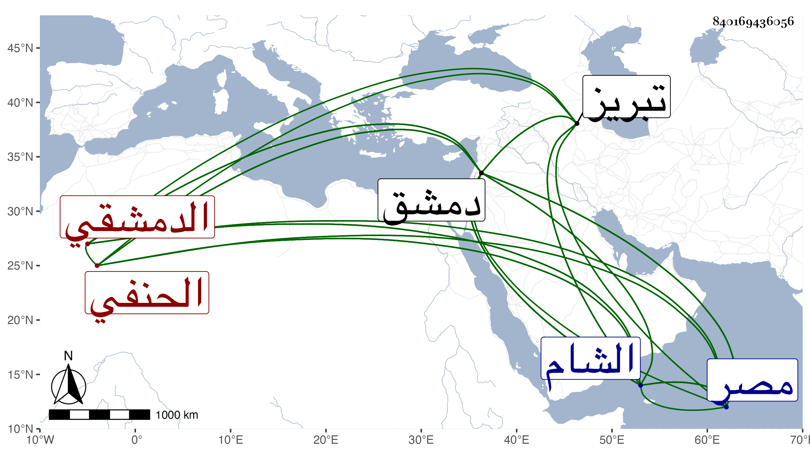

0902Sakhawi.DawLamic.ITO20230111-ara1.EIS1600.840169436056
Biography ID: 840169436056
619
أحمد بن محمود بن أحمد بن إسماعيل بن محمد بن أبي العز الشهاب بن المحيوي بن النجم الدمشقي الحنفي والد محمد الآتي وأبوه ويعرف كسلفه بابن الكشك . ولد في ليلة الجمعة سابع عشر رمضان سنة ثمانين وسبعمائة واشتغل قليلا ودرس بالظاهرية وأخذه تمر مع والده إلى تبريز ثم رجعا وخلف أباه في جهاته وناب في القضاء ثم استقل به في سنة اثنتي عشرة وعزل بعد شهرين ثم أعيد في التي تليها ثم عزل في أواخر سنة أربع عشرة ثم أعيد قبل مباشرة ابن القضامي الذي انفصل به ثم انفصل في أواخر ست عشرة وولاه المؤيد نظر الجيش لما خرج لقتال نوروز ثم أعاده إلى القضاء مضافا له ثم انفصل عن الجيش بعد مباشرته له ست سنين وثلث سنة ثم عن القضاء بعد ثلاث عشرة سنة وثمانية أشهر في سنة اثنتين وثلاثين ثم أعيد له في رمضان سنة أربع وثلاثين وهي الولاية السادسة واستمر حتى مات وعين لكتابة سر مصر ، وكان جريئا مقداما شديد الرأي ، قال التقي بن قاضي شهبة حكى لي أنه غرم من سلطنه المؤيد إلى سلطنة ططر سبعين ألف دينار وبعد ذلك أموالا كثيرة وكان يقال أن ذلك مما صار إليه وإلى أبيه من الأموال في أيام التتار بحيث أنه قال في مرض موته ما ملك فقيه في زماني من النقد ما ملكت وملك مائتي مملوك ومائتي جارية وكان بيده غالب مدارس الحنفية تداريس وأنظارا من عامر وخراب ثم إن القاضي شمس الدين الصفدي انتزع منه تدريس القصاعين والصادرية فلما عزل استعادهما ، قال شيخنا في أنبائه انتهت إليه رياسة أهل الشام في زمانه ، وكان شهما قوي النفس يستحضر الكثير من الأحكام ، ولي قضاء الحنفية بدمشق استقلالا مدة ثم أضيف إليه نظر الجيش في الدولة المؤيدية وبعدها ثم صرف عنهما معا ثم أعيد للقضاء وعين لكتابة السر بمصر بعد الشهاب بن السفاح فاعتذر بعسر البول وكانت بينه وبين النجم بن حجي معاداة فكان كل منهما يبالغ في الآخر غير أن هذا أجود . مات بدمشق في ربيع الأول سنة سبع وثلاثين عن بضع وخمسين سنة وأرخة شيخنا في صفر الاول . أصح وهو من بيت شهير بالعلم والرياسة . ولد بدمشق ونشأ بها بها فاشتغل بالفقه وغيره وصار رئيس الشام بلا مدافع مع ثروة زائدة وفضل وأفضال ، وقد وصفه شيخنا في ترجمة أبيه برئيس الشام ، وقال ابن قاضي شهبة أنه لم يكن ولا أحد من نوابه يتعاطى في القضاء شيئا مع كثرة المداراة قال وكان يتكلم في العلم جيدا ويستحضر جملة من التاريخ .
